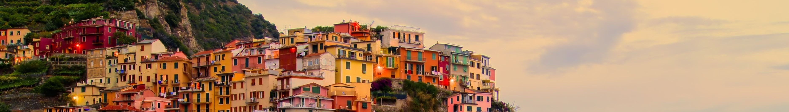
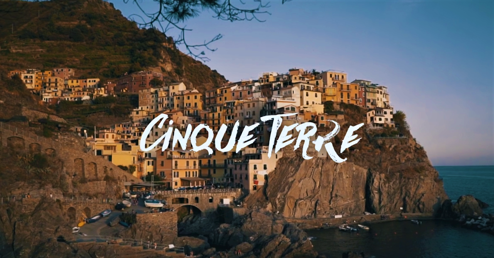

Cinque Terre
Talijanska bajka Cinque Terre
Nacionalni park Cinque Terre nalazi se u pokrajini Liguriji u provinciji La Speziji, a osnovan je 1999. godine te je u to vrijeme bio je prvi nacionalni park u Italiji. Cinqe Terre, u prijevodu s talijanskog „Pet zemalja“ sastoji se od pet malih šarenih srednjovjekovnih sela smještenih na liticama iznad Ligurskog mora.
Pet sela
Gledajući od juga prema sjeveru, pet sela redom su Riomaggiore, Manarola, Corniglia, Vernazza i Monterosso al Mare te su 1997. uvršteni u UNESCO-ovu listu svjetske baštine.
Željeznica
Zbog nepristupačnog položaja u sela se ne preporuča doći automobilom, već željeznicom koja je izgrađena 1870. te je vlakom povezala svih pet sela i tako Cinque Terre otvorila svijetu. Putovanje od mjesta La Spezia do prvog sela Riomaggiore traje oko 10 minuta, a između svakog sela putovanje vlakom je oko 5 minuta.
